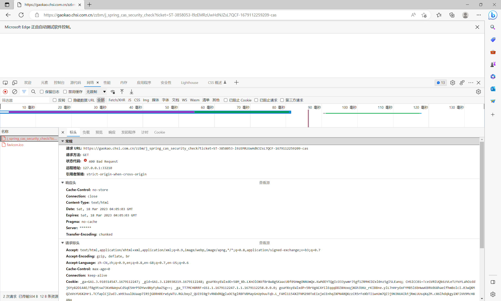
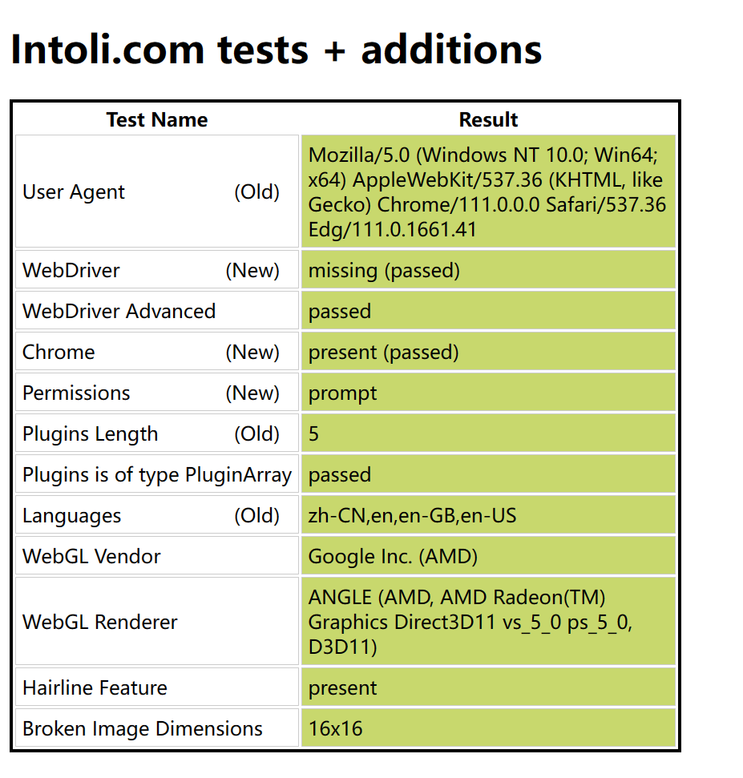

# nova 项目 - 高考网站学校名称爬取
任务：在高考特殊类型招生报名网站中爬取全中国的中学名称
但是遭遇了强大的反爬措施 遂把失败经历记录如下
首先使用 selenium 不加任何反爬措施登录网站试试：
发现第一关就过不了

请求显示 400 bad request 表明我们的请求被识别为非法的请求
在控制台输入 window.navigator.webdriver
显示结果：
间接地表示了你使用了 selenium 等自动化工具
# 尝试方案一 (加入配置)：
在 stackoverflow 搜索 selenium 400 bad request
有人提供了解决方案 :
在代码中加入：
edge_options.add_argument("--disable-blink-features=AutomationControlled") |
这个配置可以去除 webdriver 的一些特征 但是在这个网站中还是失败
在控制台输入 window.navigator.webdriver 仍然显示 true，说明特征没隐藏完
# 尝试方案二 (注入 JS 代码)：
加入代码如下：
driver.execute_cdp_cmd("Page.addScriptToEvaluateOnNewDocument", { | |
"source": """ | |
Object.defineProperty(navigator, 'webdriver', { | |
get: () => false | |
}) | |
""" | |
}) |
cdp (Chrome Devtools Protocol) 命令 通过 CDP, 可以检查 / 调试 / 监听网络流量，
Page.addScriptToEvaluateOnNewDocument：在浏览器启动之前执行给定的 JS 脚本
Object.defineProperty：JS 语法，直接在一个对象上定义一个新属性，或者修改一个对象的现有属性，并返回此对象（代码中是将
navigator.webdriver设置为false）
结果如下： 可以看到 webdriver 的一些特征确实被隐藏了
但是页面仍然一片空白 请求包仍然是 400 bad request
# 思考一：
上面的方法都在尝试隐藏某些你在使用爬虫的痕迹 部分网站检测不会那么深 但是使用爬虫总会留下痕迹
selenium 启动的浏览器 ，有几十个特征可以被检测到
有一个网站：https://bot.sannysoft.com/ 可以检测你的浏览指纹
使用无头浏览器直接打开这个网站并截图：
标红的都是未通过的测试
用刚刚尝试的方法 get 这个网站 好了很多 但仍显示未通过爬虫检测

正常浏览器打开：

# 尝试方案三 (更强大的 JS 注入):
方案二的 js 代码还是太简单了，只能隐藏一个特定的特征（虽然这个特征比较常用）
在网上看看有没有更专业的开发者开发出来的更强大的 js 代码：
找到了一份 stealth.min.js
那么，这个 stealth.min.js 文件是怎么来的呢？这就要说到 pyppeteer (一个与 selenium 同类的爬虫库) 了。，Python 版本的 pyppeteer 已经很久没有人维护了，但是 Node.js 版本的 puppeteer 持续有人维护，并且在持续更新，生态也越来越好。
有开发者给 puppeteer 写了一套插件，叫做 puppeteer-extra 。其中，就有一个插件叫做 puppeteer-extra-plugin-stealth。这个东西，就来专门用来让 puppeteer 隐藏模拟浏览器的指纹特征。
那么，我们用 Python selenium 的人怎么办呢？实际上也有办法。就是把其中的隐藏特征的脚本提取出来，做成一个单独的 js 文件。然后让 Selenium 在打开任意网页之前，先运行一下这个 js 文件里面的内容。
puppeteer-extra-plugin-stealth 的作者还写了另外一个工具，叫做 extract-stealth-evasions。这个东西就是用来生成 stealth.min.js 文件的。
首先安装 Node.js，然后安装 Npm，接着运行如下命令：
npx extract-stealth-evasions
就能在文件夹下生成一个 stealth.min.js 文件了
使用 stealth.min.js 如下：
with open('stealth.min.js') as f: | |
js = f.read() | |
driver.execute_cdp_cmd("Page.addScriptToEvaluateOnNewDocument", { | |
"source": js | |
}) |
再登录刚才的网站：
通过此网站的测试
再尝试我们要爬取的网站 请求包仍然是 400 bad request
猜测失败原因是反爬措施太强大了 不管怎么做都会留下使用爬虫的痕迹
# 尝试方案四（连接手动打开的浏览器）：
既然使用驱动程序的 selenium 总会留下特征，手动打开的浏览器不会被检测到，那我能不能从源头解决问题，先手动打开一个浏览器，然后尝试用 selenium 接管它呢。
cmd1 = 'cd "C:\Program Files (x86)\Microsoft\Edge\Application" && start .\msedge.exe --remote-debugging-port=9225 ' \ | |
'--user-data-dir="C:\selenium\EdgeProfile" ' | |
os.system(cmd1) | |
edge_options = Options() | |
edge_options.add_experimental_option("debuggerAddress", "127.0.0.1:9225") |
上面代码在命令行中用调试模式打开了 Edge 浏览器，并且开放了一个远程调试端口，我们再使用 selenium 连接上这个端口，取得控制权。
在 get 一下目标网址，并登录：
终于能进来了。
要爬取的中学名称信息分为四个下拉列表：
当选中了上一级下拉列表的某个选项后，服务端会返回一个 ajax 包，并更新下一级下拉列表里的内容，在这里仍然遇到问题。
如果用 selenium 选择了某一个选项，发现后面的下拉列表并没有更新。
演示一下。
通过检查工具抓包，发现还是 400 bad request，猜测爬虫还是被检测出来了。
# 尝试方案五 (模拟真实环境)
猜测：爬虫遍历列表选项并点击的频率太快了，被识别出来非人工操作
在每次点击选项后都加上 time.sleep (1) 休眠一秒钟，仍然失败
# 尝试方案六 (直接对 ajax 包的 url 发请求)
一个 url 示例：
https://gaokao.chsi.com.cn/zzbm/queryXjs.action?LUVVws80=5H2_YtKcf7ABAvaWM1U8BZ2I4QVXu.ZXnCDHMElGBJcEfkwqcGV49HS46waS9d9ey7yISdnA8oyYHz2LSVGIbuGTJQUzAZ3ZEKtwzJgCmJnh03c6XmyP6fupuuSQ3zzUNvQTRwS_W1y6mcNyLHCv_6s8H_R3clQaI7s3x8nr4X75WCQABlTSYDS2xmSzz2w3Cm_08zl2wbgui4v65BoiZ2L6sHDagRZ_ywvmNj_.X5H9am60bZM0jYhKpC_ErOQqL_v8VFh27JeCX9bWR5oIM9QJ126WjMGf3Sew2S68sxXTTwfXoMq5T.17Ywkn4pdikjVlQhCsnclexgw0ioxuUc130THUtUPhD.tlt3jJbzyZz_SZI.XrMRnSvVjgippoZ
对要携带的参数的 key 值和 value 进行了加密 找不到规律 也失败
# 尝试方案七 (undetected_driver)
向老师求助后得到的方案
undetected_driver 也是 selenium 提供的一个模块 可以防止浏览器特征被识别，并且可以根据浏览器版本自动下载驱动。
可以过登录 但是发来的 ajax 请求包还是 400 bad request
# 总结
猜测失败原因：还是有没有隐藏好的特征被反爬措施检查到了。
查找替代方案：在搜索引擎搜索全国中学名称，有结果，但是数据比较老，而且权威性无法保证。在中国教育部官网搜索没有结果。可能需要在同类的政府网站填写个人信息的时候可以找到。